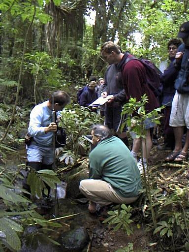
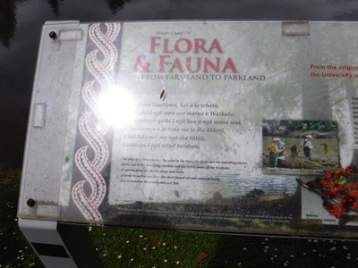
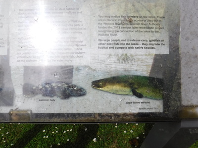
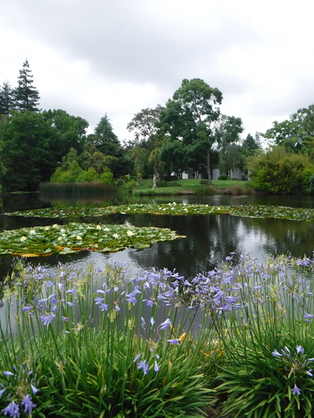
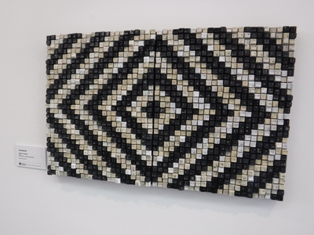
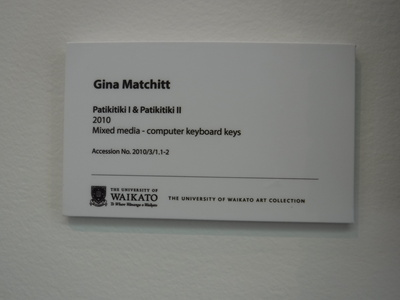
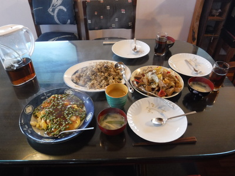
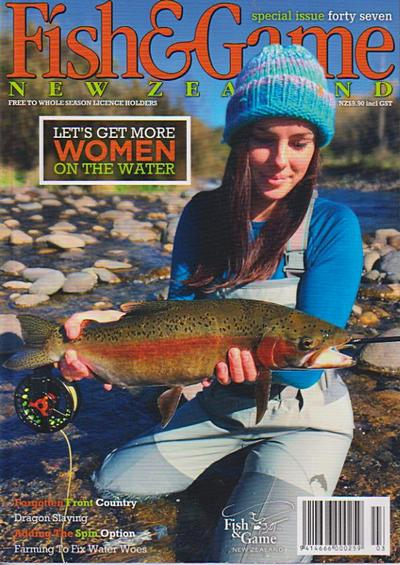

釣行日誌 ＮＺ編 「一期一会の旅：A Sentimental Journey」
睡蓮の花咲く池にて
12/03(MON)-2
キャンパス内のカフェに向かう途中、大学院時代の同窓生だったジム・バノンさんとは最近も親交がありますかとヒックス教授に訊ねると、
「ああ、ジムは４年前に亡くなったよ。難しい病気を患っていてな。オークランド空港の検疫の仕事について頑張っていたんだがね。」
「そうでしたか....。それは、惜しい人を亡くしました。」
ジムは当時50歳代だったろうか？口ひげをたゆませた笑顔が愛嬌のある人の良いおじさんだった。ジョークが好きで、よく僕のことをネタにして笑ったものだった。あの頃僕は、愛用の Apple PowerBook をバスタオルに包んでクッションの代わりとしてデイパックに入れて通学していた。勝手に研究室のLANコネクタにケーブルを差し込んで、他の Mac から設定を拝借してインターネットに繋げたり、今から思えばずいぶんとのんびりとしていた時代だったのだ。そのバスタオルには、フライフィッシングやバードウォッチング、トレッキングといったアウトドア活動のイラストと共に、「Nature Lover」というキャプションが書かれていた。ジムはそれを目ざとく見つけ、ネイチャ～ラヴァ～！と僕をからかった。バスタオルのデザイナーの意図としては、「自然愛好家」という意味で描いたと思われる。が、英語圏の人の感覚からすると Lover という単語には、恋人のみならず、愛人・色男・情婦・情夫という意味もあるので、ぐっと生々しい語感になるようだった。
Google の辞書には、Lover : a person having a sexual or romantic relationship with someone, often outside marriage.
とあるので、屋外での逢い引き、とも読めたのかも？ それをジムは可笑しがったのであった。日本の和英辞典には確かに自然愛好家＝ Nature Lover と出ているのだが、この場合は Naturalist の方が良かったかも知れない。
あの人懐こい笑顔のジムも亡くなってしまったか....と彼と過ごしたキャンパスの日々、学部生との野外生物調査、池でのナマズ捕獲、コイ・カープ調査などなどが思い出されて懐かしく、また悲しかった。

ジム・バノン氏（緑のトレーナー姿）
顔が写っていなくて残念
カフェに着いてブレンダンが２人分のコーヒーを買っている間、テーブルの方を見ていると、１人の学生がカウンターを持ってしきりとスズメの数を数えている。
「彼はスズメの論文を書いているんだ。ここのスズメは賢くて、自動ドアの前でホバリングして待ち、ドアが開くと中へ飛んでいくんだ。」
とブレンダンが笑って言った。
テーブルにはひげ面のがっしりとした男子学生と背の高い女子学生がすでに座っており、書類を広げて熱心な議論が始まっていた。２人ともすでに20代後半から30代前半の年格好である。さすがに話が難しくてよく理解できなかったが、生物や環境の話ではなく、スチューデントユニオンとか大学運営の話のようだった。
ミーティングは40分ほどで終わり、ブレンダンが最近整備されたキャンパス内の池の動植物の生態などを説明した案内看板をもとに、大学構内のミニ・ツアーを催してくれると言う。それはそれはと感謝して付いて行く。


綺麗かつ屋外用に丈夫に作られた看板には、池の整備・維持管理の様子やそこに棲む生物たちの写真が載っていた。 bully と呼ばれるカジカの１種やウナギが居るとのこと。
ワイカト大学には３つの池が有り、２つは大学整備当初に人工的に作られた浅い池、教会の前の池は昔から有る自然の池で水深が深い。それぞれの特性に応じて生物相も異なっていると言うような、興味深い話を教授が説明してくれた。数年前の酷暑の夏には浅い２つの池で悪性の藻が繁茂して困ったので、教会前の深い池に自生している淡水産の貝を移植してみようかと考えているそうだ。その貝は汚れた水を吸い込んで濾過、浄化するので水質改善に役立つらしい。
また、在来種のウナギ２種と外来種のナマズが居るので、ナマズを捕獲・駆除しなくては、とも話してくれた。僕が在学中にも１度、ジムたちと池のナマズを刺し網で捕らえたことがあったのを思い出した。
教会前の池では淡い黄色の睡蓮の花が見事に咲き誇っており、おもわずカメラを取り出した。

ブレンダンが通りかかった学生を呼び止めて頼んでくれて、記念のツーショットを撮してもらった。

あれから15年、お互い歳を取ったなぁと、今見ると改めて痛感させられる。（笑）
睡蓮の花を見つめながら、僕が、
「モネ (Claude Monet) の絵を想い起こしますね」
と言うと、師曰く、
「You have got the picture, I have got money.」
あなたは絵を買い、私はマネーを得た。
と、絵画にちなんだジョークを披露してくれた。昔から気さくな人だったが、彼の口からジョークを聞いたのは初めてだったのでいささか驚き、感心した。
続いて僕が在学中に完成したパフォーミングアーツの瀟洒なビルディングを案内してくれ、学生たちによる様々なアートコレクションを鑑賞した。僕は用がなかったので当時は１度もこの建物へ入ったことが無かったので良い機会に恵まれた。作品には、マオリの伝統的な模様を現代風にアレンジしたウールの織物や、古くて使われなくなったPCのキーボードから各色のキーを取り外し、幾何学模様にちりばめてオブジェにあしらえたものなど、見事な展示がたくさんあって目を楽しませてくれた。


芸術作品鑑賞の後、ちょうどお昼時になり、ブレンダンがカフェに戻ろうと言ってまた２人で戻り、ミーティングの前にコーヒーを買ったのとは別の店で彼がスシでもハンバーガーでも何でも好きなランチを買ってくれるというので、お言葉に甘えてショーケースのラップに包まれたサンドイッチを１個とジュースを頼み、表のテーブルで待つ。教授は自分の部屋にお弁当を取りに戻ったので１人で池のカモや鵜の姿を眺めながらのんびりとハミルトンの午後を楽しんだ。
ブレンダンが戻って来てもまだ注文した品が出てこないので、なんであのラップに包んだサンドイッチを出すのにこんなに時間がかかるのだろうといぶかしがっていると、ウェイトレスさんがようやく盆に載せて持ってきた。見ると、洒落た白い皿に調理したてのほかほかのサンドイッチが載せられ、サラダも添えられている。
「へぇ～！ これはすごいランチですね！ ありがとうブレンダン！」
とお礼を述べた。昔は円筒形の建物に入ったマクドナルドがあるだけだったキャンパスにも、こんなに素晴らしいカフェが出来たのだなぁと感動した。見栄え同様、味も抜群のサンドイッチであった。サブウェイとはひと味違った。（笑）
ブレンダンは毎朝自分で作るというサンドイッチを頬張りながら、足下の池の水面に見えるモスキートフィッシュについての詳しい説明をしてくれた。さすがは専門家である。
ランチを済ませ、午後１時近くになっていたので教授の部屋に戻り、今日はたくさん時間を取って案内してくれたお礼を丁重に述べ、小雨模様になっていたのでレインジャケットを着てから彼の部屋を出た。駐車場に戻るころにはけっこうな大降りとなってきて、慌てて車に飛び込む。
大学構内を出て、それからまたまた道に迷いつつもSH１号線に入り、ディンスデールの大型スーパー：カウントダウンに行き、ポストショップで小包を送る。食べ物は入っていないので、時間はかかっても安い船便で良かったのだが、２種類の航空便からしか選べないとのこと。仕方なく、というか当然安い方を選んで発送手続きを済ませた。ついでに棚で見つけたF&Gの雑誌も買う。後で気付いたのだが、この号はスペシャルイシューであり、年間ライセンス所有者ならタダで貰えるのだが、うっかり忘れて9.90NZD（約800円）も払ってしまった。その後、広いスーパーの棚の中をさまよい歩き、ショッピングを楽しみつつベジマイトと子供たちへのおみやげの風船を買う。 Animal Shaped Balloon とパッケージに書いてあったので、おそらく膨らませると動物の形に成るのだろうなと想像して買い込んだ。５個入りで300円くらいだった。
雨の中、田島家にたどりついて一息。午後４時よりTVニュースを見る。昨日落雷があったので、過去の落雷事故の被害者の容態がレポートされていた。
田島さんちの猫ちゃんも姿を現し、ソファーにて３人と１尾でくつろぐ。
その夜は、素晴らしい田島さんの奥さんの中華料理フルコースをごちそうになる。奥さんは実家が中華料理屋さんなので、各種レパートリーはお手の物なのだそうだ。

炒飯、エビのあんかけ卵とじ、野菜炒め、エンドウ豆のお味噌汁などですっかり満腹となってしまい、感謝感謝の夕餉であった。
夜９時にディーンに携帯電話をかける。南島グレイマウスはまだ明るく、長男オスカー君と散歩中とのこと。サウス・ウェストランド釣行中に２度出会ったネルソンのガイド、ニック・キング氏の写真や記事がフィッシュアンドゲームの雑誌に出ていたよと告げると、
「ほほ～！ そりゃ興味深い。おれも１部手に入れて見てみよう。」
と言っていた。

さらに、昨日、雷雨で死にそうな目に遭ったことを報告すると、雷にも気を付けなければならないが、上流で降った雨による急な増水に注意せよとアドバイスをしてくれた。増水する前に、早めに退路のある側の岸に渉っておくんだぞ、と念を押された。
その後、元ホストマザーであるヘザーさんの義理の弟、トロイ・メージャーさんよりテキストメッセージが入る。友人のフィッシングガイドであるロブさんはここのところ忙しく、あいにくガイドは出来ないとのこと。わざわざ連絡してくれて有り難かったが、もうガイド料金を払う余裕は無いのであった。（笑）
忘れずに処方薬を飲んで、エアーベッドの空気を少し足してから、張りの出たベッドに落ちてぐっすりと眠った。
釣行日誌ＮＺ編 目次へ
サイトマップ
ホームへ
お問い合わせ